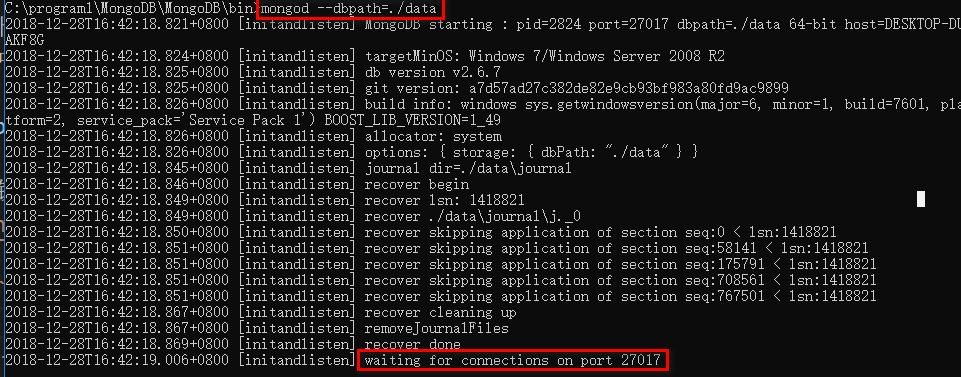
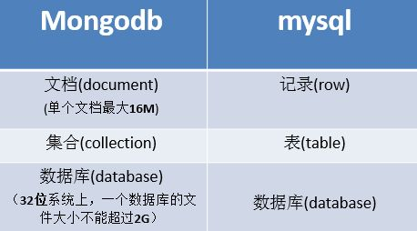

mongodb32位安装版 链接: https://pan.baidu.com/s/1SHJ1vre_CQOE3u-W0zniqQ 密码: chan
MongoDB64位绿色版 链接: https://pan.baidu.com/s/1EkAB2SrcU1mfMfff_WDxtA 密码: w913
mongo客户端 链接: https://pan.baidu.com/s/1YFxLZ-55D-WFR8os2fXN0A 密码: 61qd
先安装homebrew
http://brew.sh/
使用brew安装mongodb
brew install mongodb
再安装可视化工具 Robomongo
C:\Program Files\MongoDB 2.6 Standard\binD:\Mongodb\datamongod --dbpath=刚创建的空目录,如mongod --dbpath=D:\Mongodb\data

waiting for connections on port 27017就表示启动成功,已经在27017端口上监听了客户端的请求--dbpath后的值表示数据库文件的存储路径,而且后面的路径必须事先创建好，必须已经存在，否则服务开启失败mongodb服务mongod.exe --logpath C:\program1\MongoDB\bin\log\logfile --logappend --dbpath C:\program1\MongoDB\bin\data --serviceName MongoDB --install

语法
use database_name
切换到 school数据库下
use school
语法
show dbs
school如果不在列表内， 要显示它，我们需要向school数据库插入一些数据db.students.insert({name:'zfpx',age:1});
语法
db
语法
db.dropDatabase()
语法
db.students.help();
show collections
db.createCollection(collection_Name)
db.collection_Name.insert(document)
db.collection_name.insert(document);
`
每当插入一条新文档的时候mongodb会自动为此文档生成一个
_id属性,_id一定是唯一的，用来唯一标识一个文档 _id也可以直接指定，但如果数据库中此集合下已经有此_id的话插入会失败
db.students.insert({_id:1,name:'zfpx',age:1});
WriteResult({ "nInserted" : 1 })
db.students.insert({_id:1,name:'zfpx',age:1});
db.collection_name.save(document)
注：如果不指定 _id 字段 save() 方法类似于 insert() 方法。如果指定 _id 字段，则会更新该 _id 的数据。
> db.students.save({_id:1,name:'zfpx',age:1});
WriteResult({ "nMatched" : 1, "nUpserted" : 0, "nModified" : 0 })
> db.students.save({_id:1,name:'zfpx',age:100});
WriteResult({ "nMatched" : 1, "nUpserted" : 0, "nModified" : 1 })
db.collection.update(
<query>,
<updateObj>,
{
upsert: <boolean>,
multi: <boolean>
}
)
将students集合中数据中name是zfpx2的值修改为zfpx22
> db.students.insert({_id:1,name:'zfpx1'});
WriteResult({ "nInserted" : 1 })
> db.students.update({_id:2},{name:'zfpx2'},{upsert:true});
WriteResult({ "nMatched" : 0, "nUpserted" : 1, "nModified" : 0, "_id" : 2 })
{multi:true}的参数db.students.update({name:'zfpx2'},{$set:{age:10}},{multi:true});
WriteResult({ "nMatched" : 2, "nUpserted" : 0, "nModified" : 2 });
直接指定更新后的值
db.c3.update({name:'zfpx2'},{$set:{age:10}},{multi:true});
在原基础上累加
db.c3.update({name:'zfpx2'},{$inc:{age:1}},{multi:true});
删除指定的键
db.c3.update({name:'zfpx2'},{$unset:{age:1}},{multi:true});
向数组中添加元素
var result = db.student.update({name:'张三'},{
$push:{"hobbys":"smoking"}
});
$ne类似于MYSQL的 not in 或者not exists
db.student.update({name:'zfpx1',hobbys:{$ne:'smoking'}},{$push:{"hobbys":"smoking"}});
向集合中添加元素
db.student.update({name:'zfpx1'},{$addToSet:{"hobbys":"smoking"}});
db.student.update({name:'zfpx1'},{$pull:{"hobbys":"smoking"}});
把数组中的元素逐个添加到集合中
var hobbys = ["A",'B'];
db.student.update({name:'zfpx1'},{$addToSet:{hobbys:{$each:hobbys}}});
从数组中移除指定的索引中对应的元素
db.student.update({name:'zfpx1'},{$pop:{hobbys:1}});
db.c3.update({name:'zfpx1'},{$set:{"hobbys.0":"smoking2"}});
remove方法是用来移除集合中的数据
db.collection.remove(
<query>,
{
justOne: <boolean>
}
)
删除worker集合里name是zfpx2的所有文档数据
> db.students.remove({name:'zfpx2'});
WriteResult({ "nRemoved" : 2 })
即使匹配多条也只删除一条
> db.students.remove({name:"zfpx2"},{justOne:true})
WriteResult({ "nRemoved" : 1 })
语法
db.collection_name.find()
参数
实例 查询students下所有的文档
db.students.find()
语法
db.collection_name.find({queryWhere},{key:1,key:1})
参数列表
实例 只返回显示age列
> db.students.find({},{age:1});
查询匹配结果的第一条数据 语法
db.collection_name.findOne()
实例
db.students.findOne()
查询字段在某个范围内
db.student.find({age:{$in:[30,100]}},{name:1,age:1});
查询字段不在某个范围内
db.student.find({age:{$nin:[30,100]}},{name:1,age:1});
对特定条件取反
db.student.find({age:{$not:{$gte:20,$lte:30}}});
对数组的查询
//按所有元素匹配
//let result = db.student.find({friends:[ "A", "B", "C", "D" ]});
//匹配一项 包含A的就可以
//let result = db.student.find({friends:"A"});
//$all 必须同时包含A B
//let result = db.student.find({friends:{$all:['A',"B"]}});
//$in 或者关系 ，包含A或者B
//let result = db.student.find({friends:{$in:['A',"B"]}});
//$size 按数组的长度去匹配
//let result = db.student.find({friends:{$size:4}});
//$slice 只返回数组中的某一部分
//let result = db.student.find({friends:{$size:5}},{name:1,friends:{$slice:2}});
//let result = db.student.find({friends:{$size:5}},{name:1,friends:{$slice:-2}});
$slice:["$array", [startIndex, ] length ] （startIndex可以省略，默认从0开始）
"friends" : [ "A", "B" ] } "friends" : [ "C", "D" ]
db.stu.find({},{friends:{$slice:[0,3]}}); "friends" : [ "A", "B", "C" ]
db.student.find({$where:"this.age>30"},{name:1,age:1});
var result = db.student.find();
//while(result.hasNext()){
// printjson(result.next());
//}
条件操作符用于比较两个表达式并从mongoDB集合中获取数据
语法
db.collectoin_name.find({<key>:{$gt:<value>}})
参数
查询 age 大于 30的数据
db.students.find({age:{$gt:30}})
语法
db.collectoin_name.find({<key>:{$gte:<value>}})
参数
查询age 3大于等于30 的数据
db.students.find({age: {$gte: 30}})
语法
db.collectoin_name.find( {<key>:{$lt:<value>}})
参数
实例
db.students.find({age: {$lt: 30}}) 查询age 小于30的数据
语法
db.collectoin_name.find({<key>:{$lte:<value>}})
参数
查询age 小于等于30的数据
db.students.find({age: {$lte: 30}})
语法
db.collectoin_name.find({<key>:{$gte:<value>},<key>:{$lte:<value>}})
参数
实例 查询age 大于等于 30 并且 age 小于等于 50 的数据
db.students.find({age: {$gte: 30, $lte: 50}})
语法
db.collectoin_name.find({<key>:<value>,<key>:<value>})
参数
查询age = 30的数据
db.students.find({"age": 30})`
语法
db.collectoin_name.find({"_id" : ObjectId("value")})
参数
_id的值实例 查询_id是 562af23062d5a57609133974 数据
> db.students.find({_id:ObjectId("5adb666ecd738e9771638985")});
{ "_id" : ObjectId("5adb666ecd738e9771638985"), "name" : "zzzz" }
语法
db.collectoin_name.find().count()
参数
实例
db.students.find().count()
语法
db.collection.find({key:/value/})
参数
实例 查询name里包含zhang的数据
db.students.find({name:/value/})
查询某个字段的值当中是否以另一个值开头
db.students.find({name:/^zhang/})
find方法可以传入多个键(key)，每个键(key)以逗号隔开
语法
db.collection_name.find({key1:value1, key2:value2})
实例 查询name是zfpx并且age是1的数据
db.students.find({name:'zfpx',age:1})
语法
db.collection_name.find(
{
$or: [
{key1: value1}, {key2:value2}
]
}
)
实例 查询age = 30 或者 age = 50 的数据
db.students.find({$or:[{age:30},{age:50}]})
语法
db.collection_name.find(
{
key1:value1,
key2:value2,
$or: [
{key1: value1},
{key2:value2}
]
}
)
实例 查询 name是zfpx 并且 age是30 或者 age是 50 的数据
db.students.find({name:'zfpx',$or:[{age:30},{age:50}]})
读取指定数量的数据记录 语法
db.collectoin_name.find().limit(number)
参数
实例 查询前3条数据
db.students.find().limit(3)
跳过指定数量的数据，skip方法同样接受一个数字参数作为跳过的记录条数 语法
db.collectoin_name.find().skip(number)
参数
实例 查询3条以后的数据
db.students.find().skip(3)
通常用这种方式来实现分页功能 语法
db.collectoin_name.find().skip(skipNum).limit(limitNum)
参数
实例 查询在4-6之间的数据
db.students.find().skip(3).limit(3);
sort()方法可以通过参数指定排序的字段，并使用 1 和 -1 来指定排序的方式，其中 1 为升序排列，而-1是用于降序排列。 语法
db.collectoin_name.find().sort({key:1})
db.collectoin_name.find().sort({key:-1})
参数
实例 查询出并升序排序 {age:1} age表示按那个字段排序 1表示升序
db.students.find().sort({age:1})
var username = 'zfpx';
var password = '123456';
var user = { "username": username, "password": password };
var db = connect('students');//选择users数据库
var result = db.users.insert(user);
print('write ' + result);
var start = Date.now();
var db = connect('students');
for (var i = 0; i < 1000; i++) {
db.users.insert({ "username": "zfpx" + i });
}
var cost = Date.now() - start;
print('cost ' + cost + ' ms');
var start = Date.now();
var db = connect('students');
var users = [];
for (var i = 0; i < 1000; i++) {
users.push({ "username": "zfpx" + i });
}
db.users.insert(users);
var cost = Date.now() - start;
print('cost ' + cost + ' ms');
在命令行中执行
script>mongo 1.js
MongoDB shell version: 2.6.7
connecting to: test
connecting to: students
write WriteResult({ "nInserted" : 1 })
mongodump
-- host 127.0.0.1
-- port 27017
-- out D:/databack/backup
-- collection mycollection
-- db test
-- username
-- password
//mongodump --host 127.0.0.1 --port 27017 --out ./backup --collection users --db students
//db.users.drop();
mongorestore
--host
--port
--username
--password
// mongorestore --host 127.0.0.1 --port 27017 ./backup
use admin进入我们的admin库db.createUser方法来创建集合db.createUser({
user:'zfpx',
pwd:'123456',
customData:{
name:'zhufengpeixun',
email:'zhufengpeixun@126.com',
age:9
},
roles:[
{
role:'readWrite',
db:'school'
},
'read'
]
});
db.system.users.find();
db.system.users.remove({user:'zfpx'});
mongod --auth
mongo -u zfpx -p 123456 127.0.0.1:27017/admin
use admin;
db.auth('zfpx','zfpx');
var db = connect('school');//选择users数据库
var users = [];
for(var i=0;i<20;i++){
users.push({_id:i,name:'zfpx'+i});
}
print(users.length);
db.users.insert(users);
var startTime = Date.now();
var db = connect('school');
var records=db.users.find({name:"zfpx100"});
records.forEach(function(item){printjson(item)});
print(Date.now() - startTime);
db.users.ensureIndex({name:1});
之前我们使用MySQL等关系型数据库时，主键都是设置成自增的。但在分布式环境下，这种方法就不可行了，会产生冲突。为此，MongoDB采用了一个称之为ObjectId的类型来做主键。ObjectId是一个12字节的 BSON 类型字符串。按照字节顺序，一次代表：
| 选项 | 含义 |
|---|---|
| --port | 指定服务端口号，默认端口27017 |
| --logpath | 指定MongoDB日志文件，注意是指定文件不是目录 |
| --logappend | 使用追加的方式写日志 |
| --dbpath | 指定数据库路径 |
| --directoryperdb | 设置每个数据库将被保存在一个单独的目录 |
e.g. db.students.find( {x:
针对每一个数据库进行控制。
每一个数据库包含了下面的数据库管理角色。
backup、restore；
__system
超级用户角色 root
mongod.conf 配置文件
ps -ef | grep mongo //查看当前进程
/usr/bin/mongod -f /etc/mongod.conf //寻找配置文件
systemctl restart mongod.service //重启mongodb
show users //显示所有用户
use admin
db.createUser({
user:'admin',
pwd:'123456',
roles:[{role:'root',db:'admin'}]
});
mongo admin -u admin -p 123456
use question;
db.createUser({
user:'questionadmin',
pwd:'123456',
roles:[{role:'dbOwner',db:'question'}]
});
db.dropUser("admin") // 删除某个用户,接受字符串参数
db.dropAllUser(); // 删除当前库的所有用户
db.updateUser('admin',{pwd:'password'})
db.auth('admin','password');